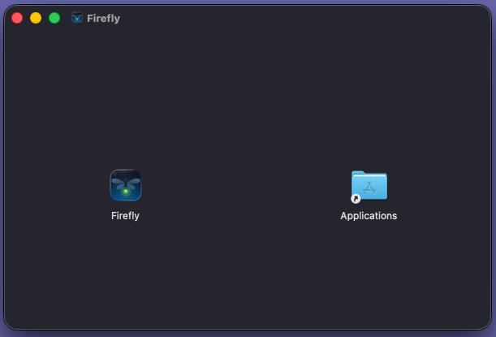
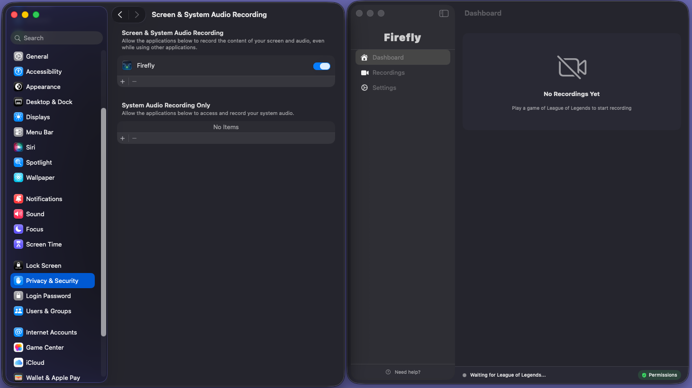
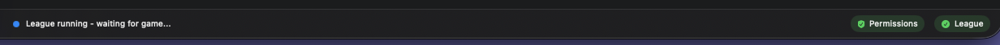
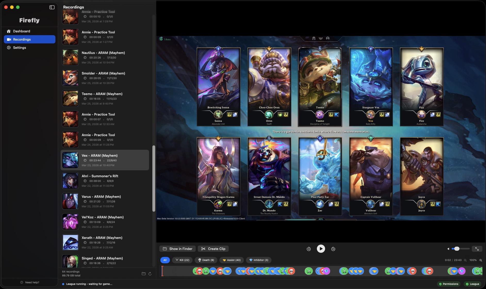

Firefly
Shine a light on your
League of Legends gameplay with Firefly!
Firefly is an auto-recorder for League of Legends on macOS that automatically captures your gameplay and provides a quick way to review every in game event.
Download
Firefly for macOS
macOS 15+ · v2.1.0 · Apple Silicon / Intel DMG
Getting Started
Firefly runs in the background and automatically records your League games. Here's how to get set up:
1
Open the DMG and drag Firefly into your Applications folder.

2
Launch Firefly and grant screen recording permission when prompted. Firefly must be running to capture your games.

3
Verify and start playing! — Firefly detects League automatically and starts recording, your status bar should look like this if permissions are correct and League is open.

4
Enjoy!
